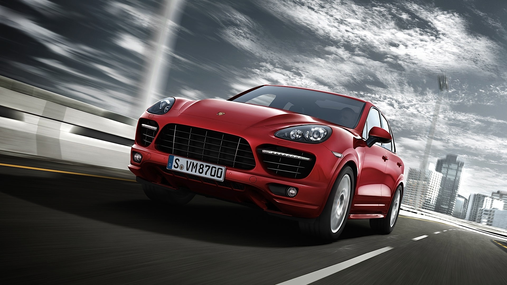

BMW X5BMW X5 — среднеразмерный кроссовер от немецкого автопроизводителя BMW. Автомобиль был представлен в 1999 году на автосалоне в Детройте. Буква «Х» означает, что автомобиль имеет полный привод, а цифра «5» — что базой послужила 5-я серия (BMW E39), однако X5 короче E39, но при этом выше и шире. Кузов Е53 напоминает BMW E46 Touring. Машина приспособлена для езды по всем типам дорожного покрытия, этим она обязана большому клиренсу и постоянному приводу на все колёc. |
|
| More images |
Porshe CayenneПятиместный среднеразмерный спортивный кроссовер производства немецкой автомобилестроительной компании Porsche. Автомобиль создан при активном участии концерна Volkswagen. Производство первого поколения (Type 955/9PA) началось в 2002 году, в Северной Америке реализация началась с 2003 года. Название модели, Cayenne, образовано по имени столицы Французской Гвианы. |